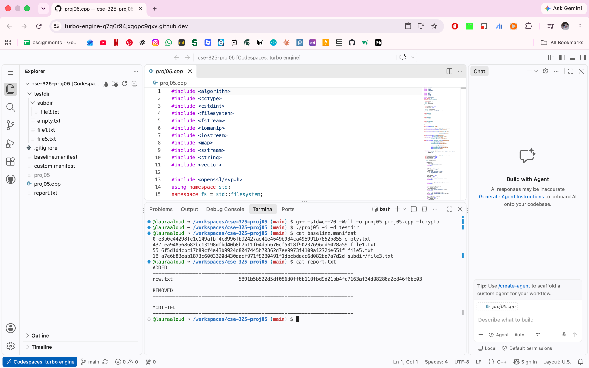
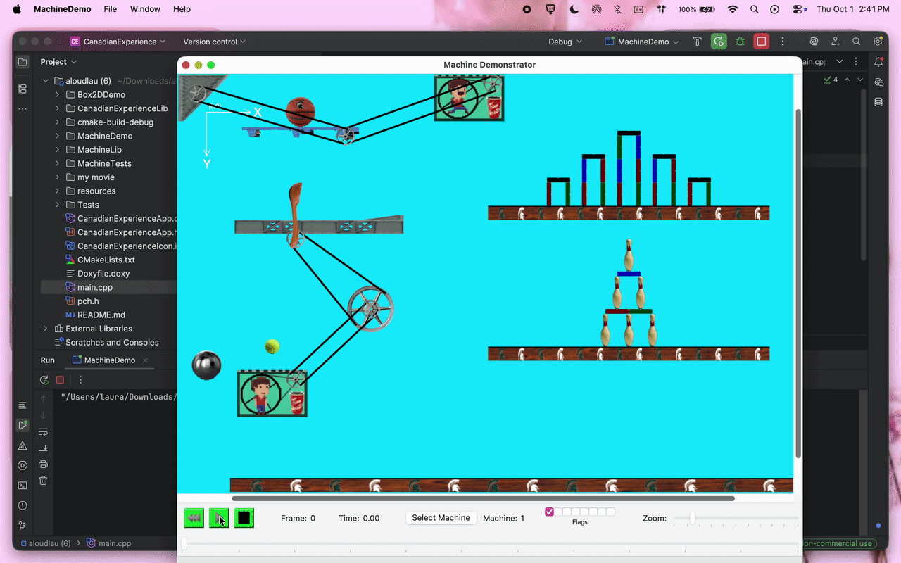
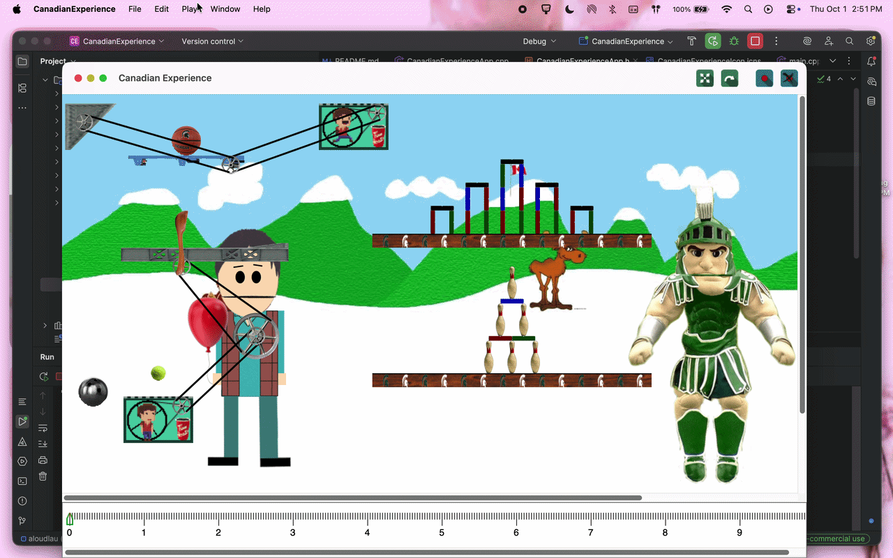

Computer Science Student at Michigan State University
Interested in software development and cybersecurity.
About
I am a Computer Science student at Michigan State University with an interest in software development, cybersecurity, and emerging technologies. I have experience with Python and C++, along with skills in problem solving, analytical thinking, communication, and teamwork.
Projects
A selection of projects I have completed through my computer science coursework.
CSE 325: File Integrity Monitor
Developed a C++ file integrity monitoring program that creates a SHA-256 baseline of files in a directory and detects changes during later scans. The program reports files that have been added, removed, or modified.
C++
SHA-256 Hashing
File System Operations
What does this project do?
The program creates a baseline of file hashes and compares future scans against it to identify files that have been added, removed, or modified.

File Integrity Monitor detecting an added file during a scan.
CSE 335: Machine Demonstrator
Developed an object-oriented C++ simulation featuring multiple animated machine systems. The project uses reusable components such as motors, pulleys, conveyors, and other moving parts that interact to create different machines and animations within a larger application.
C++
Object-Oriented Programming
Reusable Components
Animation
What does this project do?
The project simulates multiple animated machine systems using reusable components that work together to transfer motion and create different animations.

Machine Demonstrator showing the animated motor and connected machine components.

Machine system integrated into a larger animated application.
Contact
Feel free to contact me or view my work on GitHub.